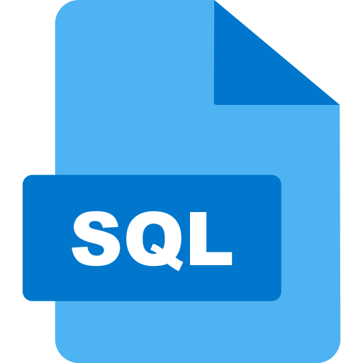

Landing Page
prosta strona landing page z FrontEnd Mentor
GitHubDawid Szmigielski-Paćko
Dawid Szmigielski-Paćko
Jestem uczniem 4 klasy technikum z pasją do programowania. Lubię tworzyć praktyczne projekty i rozwijać swoją wiedze. Poza programowaniem, moim głównym zainteresowaniem są treningi MMA i chodzenie na siłownię

Html, Css, Js - strony internetowe

SQL - podstawy baz danych

Php - obsługa formularzy

Python - Proste programy konsolowe
Android Studio - aplikacje mobilne w java

Git, GitHub - zarządzanie repozytoriami
prosta strona landing page z FrontEnd Mentor
GitHubkolejna strona z FrontEnd Mentor
GitHubprosty program w pythonie, który liczy ilość palindromów w zdaniu
GitHubNiedokończona aplikacja w android studio, dzięki której można śledzić swoją wagę
GitHub